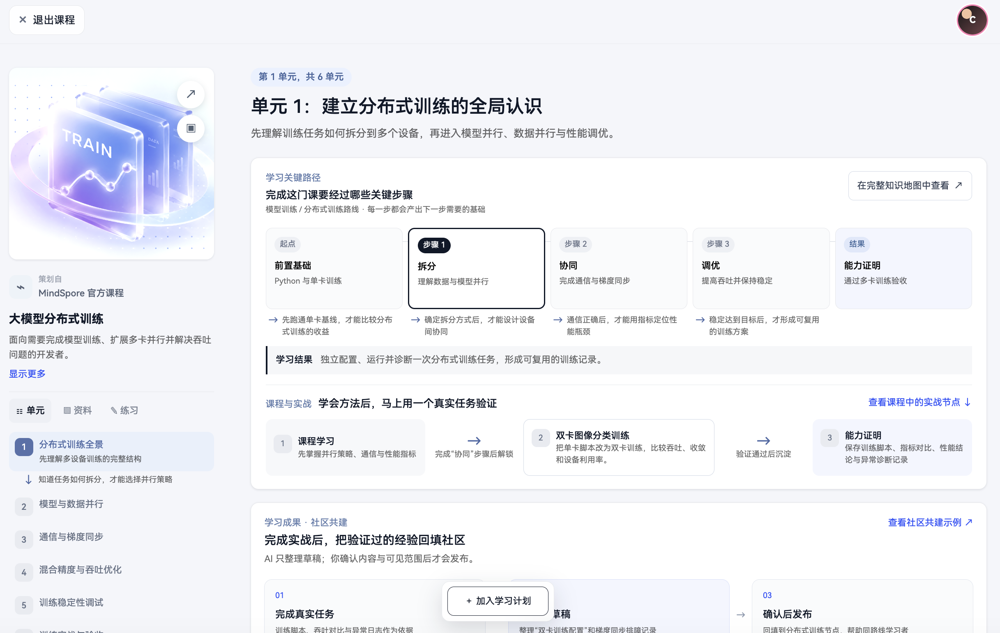

UX INTERACTION AUDIT · 课程预览页
从“展示完整链路”转为“帮助用户做学习决策”
修改前当前截图

页面已经清楚表达“学习路径—实战—社区贡献”，但三段内容同时争夺注意力，且关键决策信息与主行动没有形成明确闭环。
关键改动6 项
1主行动不明确
把“开始学习”设为唯一主按钮，“加入学习计划”降为次按钮，并与标题和投入信息放在同一决策区。
2路径信息重复且过密
保留一条紧凑主线，用“基础→学习→实战→验证→成果”表达因果，减少大卡与解释文字的重复。
3课程内容出现太晚
把单元、讲次、时长前置，让用户在决定开始前能快速判断课程量级和内容是否匹配。
4实战与课程关系不直观
明确实战的解锁条件、任务产出与验证结果，让用户理解为什么学完这部分就要进入实践。
5社区共建过早占据大区块
先压缩为完成实战后的成果出口，待达成条件后再展开贡献流程。
6左、右两套进度缺少映射
左侧只承担课程目录，右侧承担决策和当前单元详情；统一选中状态与名称，减少认知切换。
修改后建议同设计系统升级
第 1 单元 · 共 6 单元
建立分布式训练的全局认识
先理解任务如何拆分到多个设备，再完成模型并行、数据并行与性能调优。
6 单元18 讲约 12 小时2 个实战
在完整知识地图中查看 ↗
完成这门课，你会经过这条关键路径
每一步都会为下一步解锁所需的基础
基础单卡训练先建立可运行基线
学习任务拆分理解模型与数据并行
协同梯度同步掌握通信与设备协作
实战双卡训练定位吞吐与收敛问题
成果能力证明沉淀脚本和诊断记录
有基线，才能比较并行收益
确定策略，才能设计通信
指标稳定，才能进入实战
验证通过，形成可复用成果
学完可做到独立配置、运行并诊断一次分布式训练任务。
本单元内容
3 个关键步骤 · 预计 85 分钟
1
为什么要拆分训练任务
20 分钟建立单卡基线，理解并行的收益与边界
2
模型并行与数据并行如何选择
30 分钟比较显存、通信和收敛差异
3
完成一次双卡训练
35 分钟把学习结果带入真实任务验证
完成实战后，可把验证经验回填社区
查看共建示例 ↗AI 帮你整理草稿；确认内容和可见范围后再发布。
建议图说明：这是一张交互与信息架构建议图，不是最终高保真稿。延续了原页面的蓝灰色、圆角卡片、轻边框和双栏结构。